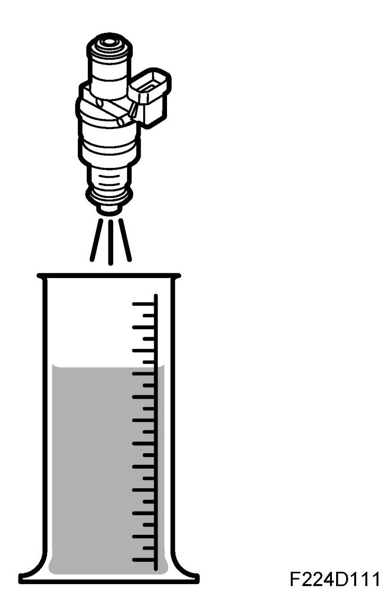
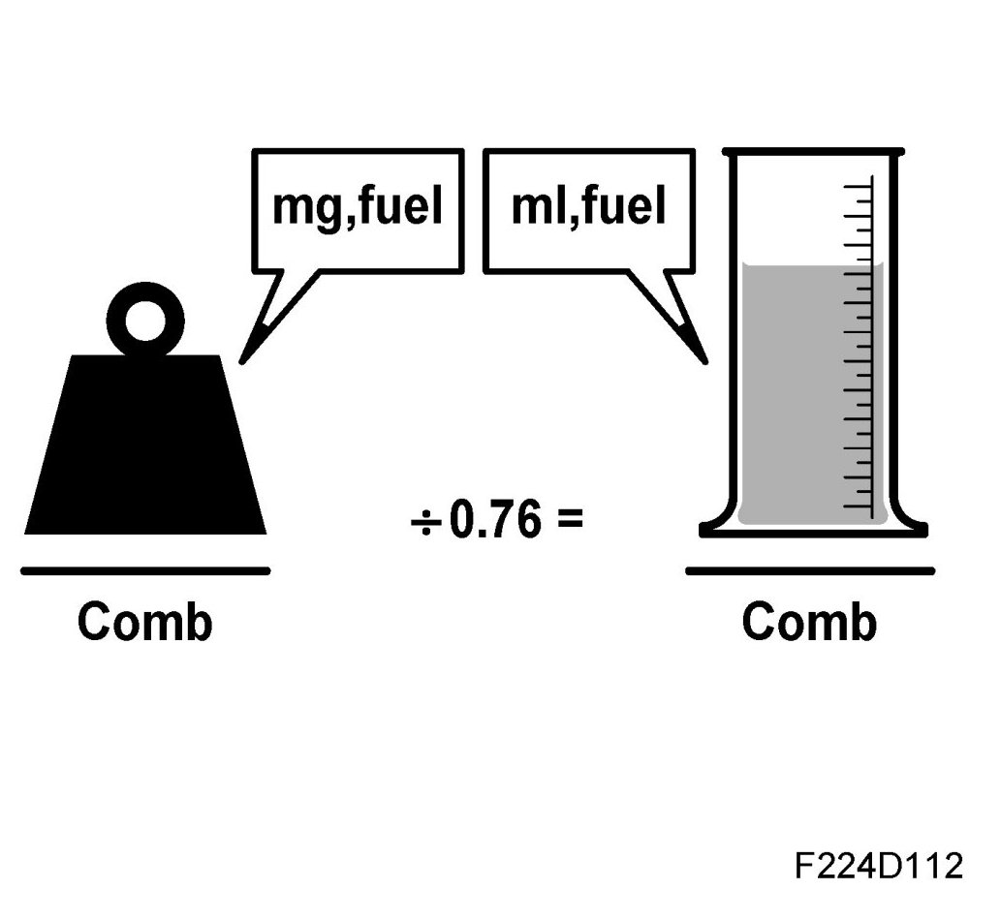
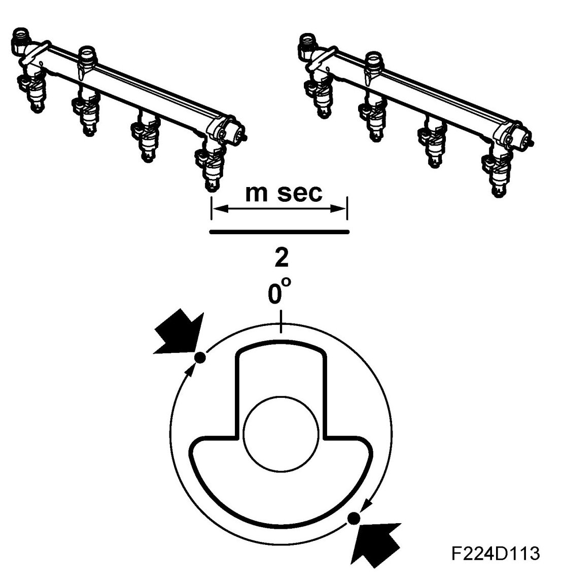
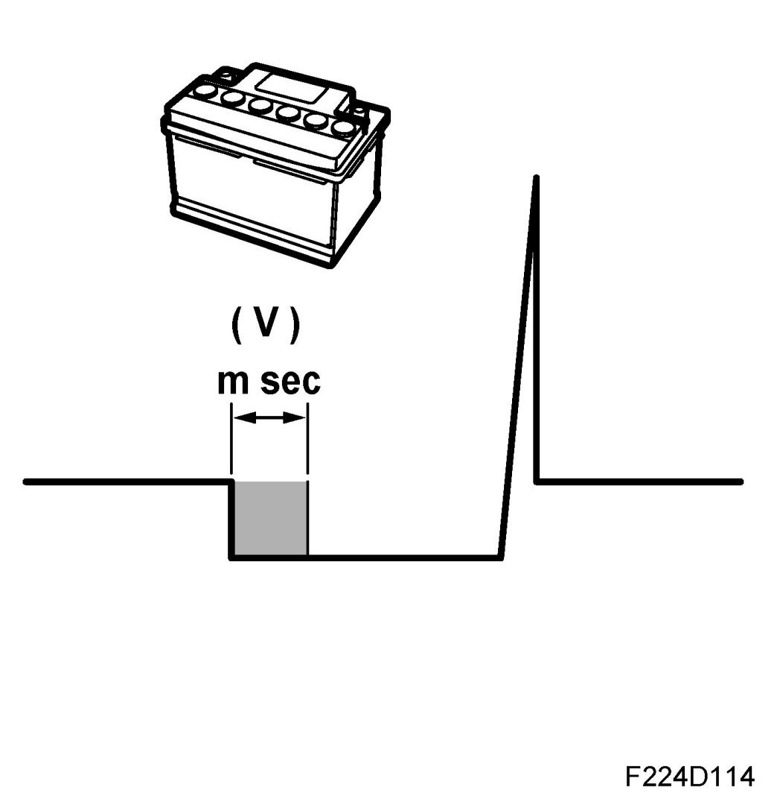

Injection Duration
Injection Duration
Fuel mass/combustion

The fuel mass to be injected into the engine per combustion has been calculated. The value is divided by 0.76 and is now converted to ml petrol/combustion.
The volume is accumulated for each combustion and the value sent on the bus. The main instrument unit uses the value to correct the tank gauge and the information display uses it to calculate the petrol consumption.

Injector opening duration
Fuel volume/combustion is converted to injector opening duration, based on knowledge of the injector flow at 3 bar differential pressure.
Injection twice/combustion
Before the camshaft position has been detected, injection will take place semi-sequentially at 180 intervals. This means two cylinders at a time in the following order:

1. Cylinders 1 and 4.
2. Cylinders 2 and 3.
Each injector injects fuel once per crankshaft rotation and this means that the basic duration must be divided by two.
Needle lift delay
The time taken for the needle in the injector to lift is voltage-dependent. Depending on the battery voltage, the delay time is added to the basic duration.
